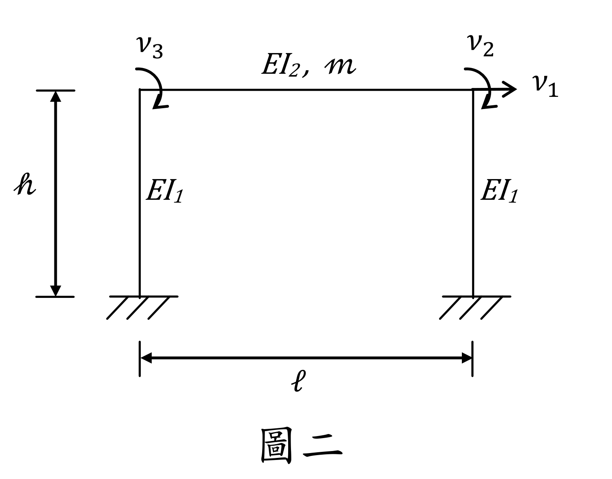
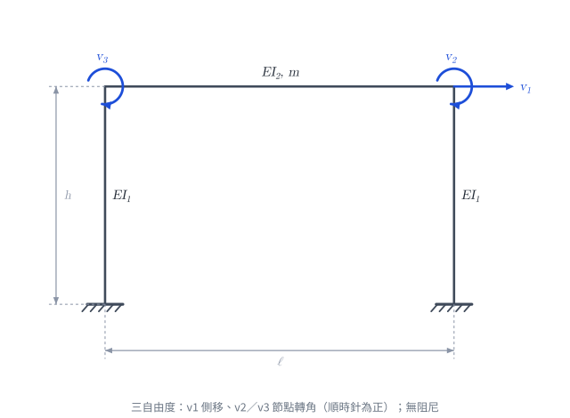
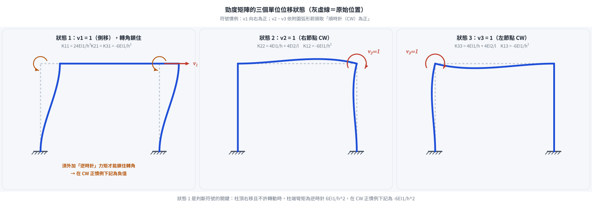
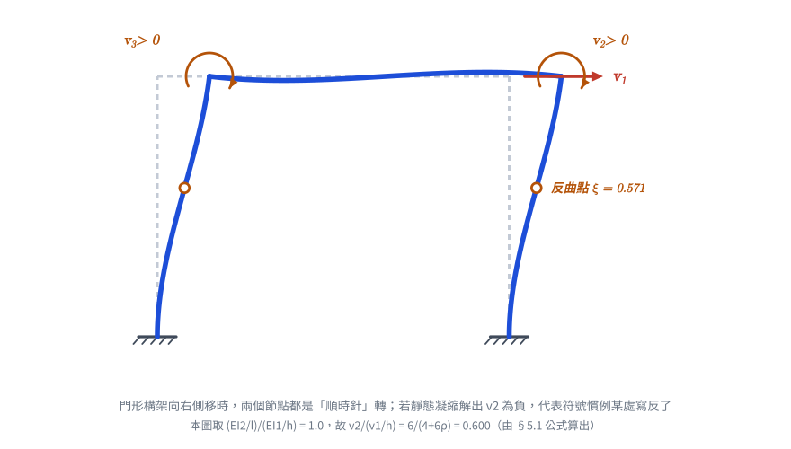

📄 題目正本：考卷原文・附圖・判讀清單（已確認）
SD-2017-2 題目正本
本檔只記錄考卷上寫了什麼、圖上畫了什麼，不含任何解法。解析見同資料夾
SD-2017-2.md。
判讀清單經使用者確認前，狀態為「待確認」；確認後本檔原則上不再修改（改動須回考卷原圖並記 log）。
| 項目 | 內容 |
|---|---|
| 考卷 | raw/exams/SD-2017_結構動力分析與耐震設計.pdf，第 1 頁（正面），第二題 |
| 考年 | 2017（民國106年）專技高考結構工程技師「結構動力分析與耐震設計」 |
| 配分 | 25 分 |
| 附圖 | SD-2017-2-fig-1.png（舊擷取，ℓ 尺寸線上有游標）、SD-2017-2-fig-2.png（2026-11-16 由考卷 500 dpi 重擷取） |
| 判讀狀態 | 已確認（2026-11-16，使用者授權依 Claude 建議。原轉錄：2026-11-16；PyMuPDF 110 dpi 整頁＋300–500 dpi 局部放大，PDF 文字層核對原文；判讀於開啟解析前完成） |
1. 考卷原文（逐字）
二、三自由度門形結構如圖二，試建立此結構之運動方程式（無阻尼）。（25 分）
（不考慮 $m$ 對 $v_2, v_3$ 自由度之轉動慣量）
2. 考卷給的公式、附表與參數
- 考卷沒有給參考公式。
- 給定（圖上）：柱 $EI_1$（兩柱）、柱高 $h$；梁 $EI_2$、$m$、跨度 $\ell$；自由度 $v_1$、$v_2$、$v_3$。
- 考卷沒有給：$m$ 是梁總質量或單位長度質量（圖上只寫「$EI_2,\ m$」）；柱的質量；軸向變形的處理（題文只說三自由度）；數值。
- 卷首注意事項：㈠可以使用電子計算器。㈡不必抄題，作答時請將試題題號及答案依照順序寫在試卷上，於本試題上作答者，不予計分。㈢本科目除專門名詞或數理公式外，應使用本國文字作答。考試時間：2 小時。
3. 附圖

證據圖 SD-2017-2-fig-2.png（500 dpi 重擷取；舊圖 SD-2017-2-fig-1.png 內容相同，ℓ 尺寸線上有手形游標）
圖面文字照錄：v3、v2、v1、EI2, m、EI1、EI1、h、ℓ、圖二
4. 判讀清單
| # | 項目 | 判讀 | 圖上／題文依據 | 把握 |
|---|---|---|---|---|
| 1 | $m$ 的意義 | 梁的總質量（集中於梁層，只有 $v_1$ 方向有慣性）。定案（使用者授權依建議）：採總質量 $m$；若讀成單位長度質量，答案中 $m$ 換成 $m\ell$，質量矩陣形式不變 | 圖上「EI2, m」只寫在梁上；題文「不考慮 $m$ 對 $v_2,v_3$ 之轉動慣量」把 $m$ 當成一個質量 | 不確定（影響答案係數，已依建議定案） |
| 2 | $v_2$、$v_3$ 正向 | 兩者皆順時針為正（$v_2$ 右節點、$v_3$ 左節點） | 500 dpi：兩弧自節點左上起，經右側往下，箭頭在左下指向左 | 確定 |
| 3 | $v_1$ | 梁層水平側移，向右為正 | 右上節點水平箭頭 | 確定 |
| 4 | 柱 | 兩柱 $EI_1$、高 $h$，柱底固定 | 圖上 EI1 兩處、h 尺寸線端點對齊柱底與梁線、柱底斜線 | 確定 |
| 5 | 梁 | $EI_2$、跨度 $\ell$（柱中心線到柱中心線），兩端與柱剛接 | ℓ 尺寸線兩端延伸線對齊兩柱線；節點未畫鉸圈 | 確定 |
| 6 | 自由度數 | 只有 $v_1,v_2,v_3$ 三個（隱含忽略構件軸向變形，兩節點側移相同） | 題文「三自由度」 | 確定（解讀） |
| 7 | 阻尼、外力 | 無阻尼；未給外力，所求為自由振動運動方程式 | 題文「（無阻尼）」；圖上無載重 | 確定 |
| 8 | 轉動慣量 | $m$ 對 $v_2$、$v_3$ 無轉動慣量（質量矩陣對應旋轉的項為零） | 題文括號 | 確定 |
| 9 | 考卷沒有給 | 柱質量、數值、$m$ 是總量或單位長度 | — | 確定 |
轉錄：2026-11-16（SD-U1-2 題目正本推廣・組 U1-2-G3）
確認：2026-11-16 使用者授權依 Claude 建議確認（SD-U1-2 組 U1-2-G3，關卡一）
考題編號：SD-2017-2
主分類： SD-U1-2 運動方程式推導
副分類： SD-U1-3 單自由度、多自由度系統之動態分析及應用
分析方法： MDOF模態分析
標籤： MDOF 3自由度 門形框架 直接勁度法 勁度矩陣 質量矩陣 運動方程式 靜態凝縮
1. 題目（考卷原文見題目正本）
考卷原文、公式／附表、附圖與判讀清單（已確認）見
SD-2017-2-problem.md。本節只列解題時最容易讀錯的地方與本解使用的記號；題意以題目正本為準。

重繪自考卷附圖，依題目正本判讀清單；本圖攔下的判讀錯誤：v2、v3 兩個轉角箭頭方向（皆順時針），以及 m 只標在梁上。
常見誤讀
| 項目 | 正確判讀 | 常見誤讀 |
|---|---|---|
| 轉角正向 | $v_2$（右節點）、$v_3$（左節點）皆順時針為正（判讀 #2） | 逆時針為正或兩節點方向不同 → $K_{12}$、$K_{13}$ 符號相反（見 §5.2） |
| 質量 $m$ | 梁的總質量，只對 $v_1$ 有慣性；$v_2$、$v_3$ 無轉動慣量（判讀 #1、#8；定案採總質量） | 當單位長度質量（則以 $m\ell$ 代 $m$）；或給 $v_2$、$v_3$ 轉動慣量 |
| 自由度 | 只有 $v_1,v_2,v_3$，隱含忽略軸向變形（判讀 #6） | 兩柱頂各自側移、多設自由度 |
| 柱底、節點 | 柱底固定、梁柱剛接（判讀 #4、#5） | 柱底當鉸接 |
| 阻尼、外力 | 無阻尼、無外力（判讀 #7） | 自行加外力向量 |
本解記號： $v_1$ 梁層水平側移（向右為正）；$v_2$、$v_3$ 右、左梁柱節點轉角（順時針為正）；$[M]$、$[K]$ 為 3×3 矩陣。
2. 考題核心精神與出題者意圖 (Core Concepts & Examiner's Intent)
核心觀念
- 直接勁度法（DSM）： 組合柱與梁的元素勁度矩陣，形成全域勁度矩陣
- 凝縮質量矩陣： 忽略旋轉慣量後，質量矩陣僅 $M_{11} = m$ 非零（奇異矩陣）
- 靜態凝縮觀念： $v_2$、$v_3$ 的方程無慣性項，屬純靜力平衡，可透過靜態凝縮（static condensation）化簡為 SDOF
出題者意圖
- 測驗考生能否用「元素疊加法」建立全域勁度矩陣（固定端柱 + 梁）
- 測驗對「轉動慣量可忽略」條件的理解及對質量矩陣的正確建立
- 隱性考點：此 3DOF 系統因質量矩陣奇異，可靜態凝縮為等效 SDOF 系統
3. 解題戰略地圖與陷阱分析 (Strategic Roadmap & Trap Analysis)
步驟作戰計畫
Step 1: 確認自由度與符號慣例
Step 2: 建立固定端柱的 2×2 縮減勁度（橫移 + 旋轉）
Step 3: 建立梁的旋轉勁度（2×2）
Step 4: 用直接勁度法疊加為全域 3×3 勁度矩陣 [K]
Step 5: 建立質量矩陣 [M]（忽略轉動慣量）
Step 6: 寫出運動方程式
關鍵陷阱
| # | 陷阱 | 錯誤做法 | 正確做法 |
|---|---|---|---|
| 1 | 柱底固定端的勁度 | 用兩端鉸接柱的勁度 $3EI/h^3$ | 固定端柱（cantilever）的縮減勁度 $12EI_1/h^3$（橫移）和 $4EI_1/h$（旋轉） |
| 2 | 旋轉符號慣例弄反 | 以為「CW 正 → 非對角項為正」 | 恰好相反：$v_1$ 向右正時，CCW 正給 $K_{12}=+6EI_1/h^2$、CW 正給 $K_{12}=-6EI_1/h^2$。本題附圖為 CW 正 → $K_{12}=K_{13}=-6EI_1/h^2$ |
| 3 | 梁的勁度貢獻 | 誤用端部橫移分量（梁端無相對橫移） | 梁端無相對橫移，只有旋轉勁度 $4EI_2/\ell$（直接）和 $2EI_2/\ell$（交叉） |
| 4 | 質量矩陣 | 在 $M_{22}$、$M_{33}$ 填入轉動慣量 | 題目明確忽略，故 $M_{22} = M_{33} = 0$ |
| 5 | 兩根柱的勁度疊加 | 只算一根柱 | $K_{11}$ 需兩根柱疊加：$2 \times 12EI_1/h^3 = 24EI_1/h^3$ |
3.5 變數層次分析 (Variable Hierarchy Analysis)
複習提示：第一次解題後，在每個卡住的知識點旁標記
⚠；第二次複習時只看有⚠的項目。
最終目標
建立三自由度門形框架無阻尼運動方程式：[M]{v̈} + [K]{v} = {0}
本題關鍵公式（依計算順序）
$\boxed{\cdot}$ = 由前步驟推導出的中間變數
$$\text{Step 1: 固定端柱縮減勁度（橫移 }v_1\text{，旋轉 }v_{2\text{ or }3}\text{）}$$
$$k_{col} = \begin{bmatrix} 12EI_1/h^3 & -6EI_1/h^2 \\ -6EI_1/h^2 & 4EI_1/h \end{bmatrix}\qquad(\text{側移右正、轉角 CW 正})$$
$$\text{Step 2: 梁旋轉勁度}$$
$$k_{beam} = \begin{bmatrix} 4EI_2/\ell & 2EI_2/\ell \\ 2EI_2/\ell & 4EI_2/\ell \end{bmatrix}_{[v_3,\, v_2]}$$
$$\text{Step 3: 全域勁度矩陣（疊加 2 柱 + 1 梁）}$$
$$K_{11} = 2\times\frac{12EI_1}{h^3}, \quad K_{12}=K_{13}=-\frac{6EI_1}{h^2}, \quad K_{22}=K_{33}=\frac{4EI_1}{h}+\frac{4EI_2}{\ell}, \quad K_{23}=\frac{2EI_2}{\ell}$$
$$\text{Step 4: 質量矩陣}$$
$$[M] = \mathrm{diag}(m,\; 0,\; 0)$$
L1：題目直接給定
| 符號 | 數值 | 說明 |
|---|---|---|
| $EI_1$ | 已知 | 柱抗彎勁度 |
| $EI_2$ | 已知 | 梁抗彎勁度 |
| $h$ | 已知 | 柱高 |
| $\ell$ | 已知 | 梁跨距 |
| $m$ | 已知 | 梁總質量 |
| 柱底條件 | 固定端 | 兩柱底均 fixed |
L2：需知識點推導
Step 1：固定端柱縮減勁度
| 符號 | 公式/來源 | 卡關? |
|---|---|---|
| $k_{11}^{col}$ | $12EI_1/h^3$（橫移剛度） | |
| $k_{12}^{col}$ | $-6EI_1/h^2$（橫移–旋轉耦合；CW 正時為負，CCW 正時為正） | |
| $k_{22}^{col}$ | $4EI_1/h$（旋轉剛度） |
Step 2：梁旋轉勁度（斜截面公式）
| 符號 | 公式/來源 | 卡關? |
|---|---|---|
| $k_{33}^{beam}$ | $4EI_2/\ell$（同端旋轉剛度） | |
| $k_{32}^{beam}$ | $2EI_2/\ell$（交叉旋轉剛度，carry-over） |
Step 3：全域矩陣疊加
| 項 | 來源 | 卡關? |
|---|---|---|
| $K_{11}$ | 左柱 + 右柱各貢獻 $12EI_1/h^3$ | |
| $K_{12}$、$K_{13}$ | 各柱 $-6EI_1/h^2$（CW 正慣例） | |
| $K_{22}$、$K_{33}$ | 各柱 $4EI_1/h$ + 梁端 $4EI_2/\ell$ | |
| $K_{23}$ | 梁交叉項 $2EI_2/\ell$ |
L3：深層知識（不懂就卡住）
| 知識點 | 說明 | 卡關? |
|---|---|---|
| 固定端柱縮減勁度的推導 | 對完整 4×4 梁元素，約束底部兩DOF後得 2×2 縮減矩陣 | |
| 旋轉符號慣例影響正負號 | $v_1$ 右正時：CCW 正 → $K_{12}=+6EI_1/h^2$；CW 正 → $K_{12}=-6EI_1/h^2$。兩種都對，但須自洽；驗證法：側移向右時節點實際會順時針轉，故 CW 慣例下靜態凝縮解出的 $v_2$ 必須為正 | |
| 梁端無相對橫移的條件 | 柱為剛性軸向（不可伸長），故兩節點高度相同，梁弦旋轉角 $\psi = 0$ | |
| 轉動慣量可忽略的後果 | $M_{22} = M_{33} = 0$ → 質量矩陣奇異 → 第 2、3 方程無慣性項（純靜力） | |
| 靜態凝縮原理 | 利用第 2、3 方程（靜力方程）表達 $v_2$、$v_3$ 為 $v_1$ 的函數，代入第 1 方程得等效 SDOF |
4. 步驟化詳細計算過程 (Step-by-Step Detailed Calculation)
Step 1：確認自由度與符號慣例
DOF 向量：
$$\{v\} = \begin{Bmatrix} v_1 \\ v_2 \\ v_3 \end{Bmatrix} = \begin{Bmatrix} \text{水平側移（→ 正）} \\ \text{右節點旋轉（CW 正）} \\ \text{左節點旋轉（CW 正）} \end{Bmatrix}$$
符號慣例（依附圖，CW 正）： 兩個轉角自由度的弧形箭頭皆為順時針，故取順時針為正。
這個慣例會讓 $K_{12}$、$K_{13}$ 帶負號，理由如下（考場上請務必自己推一次，不要憑印象）：
令柱頂向右平移 $v_1=1$、並「鎖住」轉角不動（$v_2=0$），此即固定–固定柱的純側移（S 形變形）。
由傾角變位法 $M = \frac{2EI}{h}(2\theta_a+\theta_b-3\psi)$，弦轉角 $\psi = -1/h$（順時針），得柱頂端彎矩
$M = 6EI_1/h^2$，方向為逆時針。也就是說：要維持「向右平移但不轉」，必須外加一個逆時針力矩。
在 CW 正的慣例下，逆時針即為負 → $K_{21} = K_{12} = -6EI_1/h^2$。
Step 2：固定端柱的縮減勁度矩陣
對固定端柱，底部DOF為零（$u_{bot}=0$，$\theta_{bot}=0$），柱頂自由，DOFs為 $[u_{top}=v_1,\; \theta_{top,CW}]$。
縮減後的元素勁度矩陣：
$$[k_{col}] = \frac{EI_1}{h^3}\begin{bmatrix} 12 & -6h \\ -6h & 4h^2 \end{bmatrix} = \begin{bmatrix} \dfrac{12EI_1}{h^3} & -\dfrac{6EI_1}{h^2} \\[8pt] -\dfrac{6EI_1}{h^2} & \dfrac{4EI_1}{h} \end{bmatrix} \qquad(\text{DOF：}[u_{top}\to\text{右正},\ \theta_{top}\to\text{CW 正}])$$
策略註解： 對角項恆正（$12EI_1/h^3$、$4EI_1/h$）與慣例無關；只有交叉項的正負隨轉角慣例改變。
本題採 CW 正 → 交叉項為 $-6EI_1/h^2$。矩陣仍為正定（$\det = 48E^2I_1^2/h^4 - 36E^2I_1^2/h^4 = 12E^2I_1^2/h^4 > 0$ ✓）。
Step 3：梁的旋轉勁度矩陣
由於柱為軸向剛性（不可伸長），兩端節點高度一致，梁弦旋轉角 $\psi = 0$。梁只需考慮兩端旋轉 DOF（$v_3$ = 左，$v_2$ = 右，均 CW 正）。
利用斜截面公式（slope-deflection equation），梁端的旋轉勁度：
$$[k_{beam}]_{[v_3,v_2]} = \frac{EI_2}{\ell}\begin{bmatrix} 4 & 2 \\ 2 & 4 \end{bmatrix} = \begin{bmatrix} \dfrac{4EI_2}{\ell} & \dfrac{2EI_2}{\ell} \\[8pt] \dfrac{2EI_2}{\ell} & \dfrac{4EI_2}{\ell} \end{bmatrix}$$
策略註解： 交叉項 $2EI_2/\ell$ 是梁的 carry-over 效應：右端旋轉時，左端也會承受正比於右端旋轉量的傳遞力矩。
Step 4：全域勁度矩陣 [K]（直接勁度疊加）
DOF 排列：$[v_1,\; v_2,\; v_3]$
| 元素 | 關聯 DOF | 貢獻到 |
|---|---|---|
| 右柱 | $[v_1,\; v_2]$ | $K_{11}$, $K_{12}$, $K_{21}$, $K_{22}$ |
| 左柱 | $[v_1,\; v_3]$ | $K_{11}$, $K_{13}$, $K_{31}$, $K_{33}$ |
| 梁 | $[v_3,\; v_2]$ | $K_{33}$, $K_{32}$, $K_{23}$, $K_{22}$ |
各項計算：
$$K_{11} = \frac{12EI_1}{h^3}(\text{右柱}) + \frac{12EI_1}{h^3}(\text{左柱}) = \frac{24EI_1}{h^3}$$
$$K_{12} = K_{21} = -\frac{6EI_1}{h^2}(\text{右柱})$$
$$K_{13} = K_{31} = -\frac{6EI_1}{h^2}(\text{左柱})$$
$$K_{22} = \frac{4EI_1}{h}(\text{右柱}) + \frac{4EI_2}{\ell}(\text{梁右端}) = \frac{4EI_1}{h} + \frac{4EI_2}{\ell}$$
$$K_{33} = \frac{4EI_1}{h}(\text{左柱}) + \frac{4EI_2}{\ell}(\text{梁左端}) = \frac{4EI_1}{h} + \frac{4EI_2}{\ell}$$
$$K_{23} = K_{32} = \frac{2EI_2}{\ell}(\text{梁交叉項})$$
$$\boxed{[K] = \begin{bmatrix} \dfrac{24EI_1}{h^3} & -\dfrac{6EI_1}{h^2} & -\dfrac{6EI_1}{h^2} \\[10pt] -\dfrac{6EI_1}{h^2} & \dfrac{4EI_1}{h}+\dfrac{4EI_2}{\ell} & \dfrac{2EI_2}{\ell} \\[10pt] -\dfrac{6EI_1}{h^2} & \dfrac{2EI_2}{\ell} & \dfrac{4EI_1}{h}+\dfrac{4EI_2}{\ell} \end{bmatrix}}\qquad(v_2,v_3\ \text{採 CW 正})$$
對稱性驗算： $[K]$ 為實對稱矩陣（$K_{ij}=K_{ji}$）✓，且為正定 ✓。
慣例驗算： 若把 $v_2,v_3$ 改為 CCW 正（等價於做座標變換 $[T]=\mathrm{diag}(1,-1,-1)$），則
$[K]' = [T][K][T]$ 的非對角項 $K_{12},K_{13}$ 變為 $+6EI_1/h^2$、$K_{23}$ 維持 $+2EI_2/\ell$，
特徵值完全不變——符號慣例只影響書寫，不影響物理。

圖 1 勁度矩陣三行的物理意義。狀態 1 是判斷符號的關鍵：柱頂右移又不許轉動時，必須外加逆時針力矩 $6EI_1/h^2$ 才鎖得住——在本題附圖的 CW 正慣例下，它記為 $-6EI_1/h^2$。
Step 5：質量矩陣 [M]
慣性來源：
- 梁質量 $m$ 貢獻 $v_1$（水平平移）方向的平移慣性：$M_{11} = m$
- 題目說明「不考慮 $m$ 對 $v_2$、$v_3$ 自由度之轉動慣量」：$M_{22} = M_{33} = 0$
- 各交叉慣性項：$M_{ij} = 0$（$i \neq j$）
$$\boxed{[M] = \begin{bmatrix} m & 0 & 0 \\ 0 & 0 & 0 \\ 0 & 0 & 0 \end{bmatrix}}$$
Step 6：運動方程式
$$\boxed{[M]\{\ddot{v}\} + [K]\{v\} = \{0\}}$$
展開為矩陣形式：
$$\begin{bmatrix} m & 0 & 0 \\ 0 & 0 & 0 \\ 0 & 0 & 0 \end{bmatrix}\begin{Bmatrix}\ddot{v}_1\\\ddot{v}_2\\\ddot{v}_3\end{Bmatrix} + \begin{bmatrix} \dfrac{24EI_1}{h^3} & -\dfrac{6EI_1}{h^2} & -\dfrac{6EI_1}{h^2} \\[10pt] -\dfrac{6EI_1}{h^2} & \dfrac{4EI_1}{h}+\dfrac{4EI_2}{\ell} & \dfrac{2EI_2}{\ell} \\[10pt] -\dfrac{6EI_1}{h^2} & \dfrac{2EI_2}{\ell} & \dfrac{4EI_1}{h}+\dfrac{4EI_2}{\ell} \end{bmatrix}\begin{Bmatrix}v_1\\v_2\\v_3\end{Bmatrix} = \begin{Bmatrix}0\\0\\0\end{Bmatrix}$$
分量形式（三道方程）：
$$\text{（1）}\quad m\ddot{v}_1 + \frac{24EI_1}{h^3}v_1 - \frac{6EI_1}{h^2}v_2 - \frac{6EI_1}{h^2}v_3 = 0$$
$$\text{（2）}\quad -\frac{6EI_1}{h^2}v_1 + \left(\frac{4EI_1}{h}+\frac{4EI_2}{\ell}\right)v_2 + \frac{2EI_2}{\ell}v_3 = 0$$
$$\text{（3）}\quad -\frac{6EI_1}{h^2}v_1 + \frac{2EI_2}{\ell}v_2 + \left(\frac{4EI_1}{h}+\frac{4EI_2}{\ell}\right)v_3 = 0$$
方程（1） 為動力方程（含慣性項）；方程（2）（3） 為靜力平衡方程（無慣性項，因轉動慣量被忽略）。
5. 關鍵爭議點與進階探討 (Critical Issues & Advanced Discussion)
5.1 靜態凝縮：化為等效 SDOF
由結構對稱性，側移時兩節點轉角相同（$v_2 = v_3$）。令 $c \equiv \dfrac{6EI_1}{h^2}$、$A \equiv \dfrac{4EI_1}{h}+\dfrac{4EI_2}{\ell}$、$B \equiv \dfrac{2EI_2}{\ell}$。
由方程（2）：$-c\,v_1 + (A+B)\,v_2 = 0$
$$\boxed{v_2 = v_3 = \frac{c}{A+B}\,v_1 = \frac{6EI_1/h^2}{\dfrac{4EI_1}{h} + \dfrac{6EI_2}{\ell}}\;v_1 = \frac{6EI_1\,\ell}{4EI_1\ell + 6EI_2 h}\cdot\frac{v_1}{h}}$$
物理驗算（極重要）： 結果為正值。在 CW 正的慣例下，$v_2>0$ 代表節點順時針轉——
這正是門形框架向右側移時節點的實際轉向 ✓。若你算出負值，代表符號慣例某處弄反了。
代回方程（1）：
$$m\ddot v_1 + \underbrace{\left(\frac{24EI_1}{h^3} - \frac{2c^2}{A+B}\right)}_{k_{\text{eff}}}v_1 = 0$$
$$\boxed{k_{\text{eff}} = \frac{24EI_1}{h^3} - \frac{72\,E^2I_1^2}{h^4\left(\dfrac{4EI_1}{h}+\dfrac{6EI_2}{\ell}\right)}},\qquad \omega_n = \sqrt{\frac{k_{\text{eff}}}{m}}$$
此過程稱為靜態凝縮（static condensation），即 $k_{\text{eff}} = K_{11} - \{K_{1r}\}^T[K_{rr}]^{-1}\{K_{1r}\}$（Schur 補）。
兩個極限驗算：
| 極限 | $k_{\text{eff}}$ | 對應物理 |
|---|---|---|
| $EI_2 \to \infty$（剛性梁） | $\dfrac{24EI_1}{h^3}$ | 純剪力構架，兩柱皆為固定–固定 ✓ |
| $EI_2 \to 0$（無梁束制） | $\dfrac{24EI_1}{h^3} - \dfrac{72E^2I_1^2}{h^4\cdot 4EI_1/h} = \dfrac{24EI_1}{h^3}-\dfrac{18EI_1}{h^3} = \dfrac{6EI_1}{h^3}$ | 兩根懸臂柱並聯：$2\times\dfrac{3EI_1}{h^3}$ ✓ |
兩個極限都命中已知答案，是本題最有力的自我驗算。

圖 2 實際側移下的變形形狀（取 $(EI_2/\ell)/(EI_1/h)=1$）。門形構架向右側移時兩個節點都是順時針轉，故 CW 正慣例下靜態凝縮解出的 $v_2$ 必為正值；若你算出負值，符號某處寫反了。柱呈雙曲率、反曲點位置由 $\S5.1$ 的 $v_2/v_1$ 公式算出，不是目測。
5.2 旋轉符號慣例的選擇（本題最容易出錯處）
$v_1$ 取向右為正時：
| 轉角慣例 | $K_{12}, K_{13}$ | $K_{23}$ | 靜態凝縮解出的 $v_2$ |
|---|---|---|---|
| CW 正（本題附圖） | $-\dfrac{6EI_1}{h^2}$ | $+\dfrac{2EI_2}{\ell}$ | $>0$（節點順時針轉，與物理相符） |
| CCW 正（Chopra 教科書慣例） | $+\dfrac{6EI_1}{h^2}$ | $+\dfrac{2EI_2}{\ell}$ | $<0$（節點順時針轉，以 CCW 計為負） |
兩者僅差一個座標變換 $[T]=\mathrm{diag}(1,-1,-1)$，$[K]'=[T][K][T]$，特徵值、頻率、$k_{\text{eff}}$ 完全相同。
推導口訣（不必背，30 秒可推）：
固定–固定柱純側移 $\Delta$ 時，兩端彎矩皆為 $6EI\Delta/h^2$，方向與弦轉動方向相反。
柱頂右移時弦順時針轉 → 端彎矩逆時針 → 在 CW 正慣例下為負。
考場建議： 不論選哪個慣例，寫下來、並用「側移向右時節點順時針轉」這句話做一次符號檢查，就不會錯。
5.3 物理意義：奇異質量矩陣
$[M]$ 的奇異性（第 2、3 方程無慣性項）並非錯誤，而是「旋轉慣量忽略」的直接結果。此時：
- 旋轉 DOF（$v_2$、$v_3$）為「準靜態」（quasi-static）DOF，可被完全消去
- 系統的動力行為完全由 $v_1$ 主導，實際只有 1 個動力自由度
- 靜態凝縮後即為等效 SDOF：$m\ddot v_1 + k_{\text{eff}}v_1 = 0$（見 §5.1）
注意：題目要求的是「建立運動方程式」，因此標準答案就是 §4 Step 6 的 $3\times3$ 形式；
靜態凝縮屬於加分討論，不必也不應取代原式。
5.4 實務對應
此問題對應台灣耐震設計中「樓層水平剪力構架」的建模：
當梁的勁度遠大於柱（$EI_2/\ell \gg EI_1/h$）時，$k_{\text{eff}} \to 24EI_1/h^3$，即成為教科書上的「剪力建築（shear building）」。
換言之，剪力建築假設的合理性，就是本題 §5.1 那個極限。反之，若梁偏柔，實際側向勁度可低至 $6EI_1/h^3$，僅為剪力建築假設的四分之一——這是「強柱弱梁 vs 弱柱強梁」在動力特性上的直接後果。
修正紀錄
| 日期 | 修正內容 | 理由／驗證 |
|---|---|---|
| 2026-08-22 | $K_{12}=K_{13}$ 由 $+6EI_1/h^2$ 更正為 $-6EI_1/h^2$（並連帶更正 $[k_{col}]$、$[K]$、三道分量方程） | 放大檢視 SD-2017-2-fig-1.png 的弧形箭頭，$v_2$、$v_3$ 確為順時針正；再以傾角變位法 $M=\frac{2EI}{h}(2\theta_a+\theta_b-3\psi)$ 推導：純側移時柱端彎矩為逆時針 $6EI_1/h^2$，於 CW 正慣例下為負 |
| 2026-08-22 | §3 陷阱 2 與 §5.2 原敘述「CW 正 → 非對角項為正、CCW 正 → 為負」完全反向，已更正並補上推導與對照表 | 原文的慣例對應關係錯誤，會誤導複習 |
| 2026-08-22 | §5.1 靜態凝縮：$v_2$ 由負值更正為正值，並補上 $k_{\text{eff}}$ 的完整表達式與兩個極限驗算（$EI_2\to\infty$ 得 $24EI_1/h^3$；$EI_2\to0$ 得 $6EI_1/h^3$） | 原文只給 $v_2$ 而未給 $k_{\text{eff}}$，且符號與物理（側移向右時節點順時針轉）矛盾 |
| 2026-08-22 | §1 自由度定義、圖說補上「附圖箭頭為順時針」的明確依據 | 符號慣例是本題唯一的判分風險，必須寫在最前面 |
$[M]=\mathrm{diag}(m,0,0)$、$K_{11}=24EI_1/h^3$、$K_{22}=K_{33}=4EI_1/h+4EI_2/\ell$、$K_{23}=2EI_2/\ell$ 經重新驗算正確，未更動。
圖解補繪：2026-08-22（向量圖，由 gen_SD-2017-2.py 以程式碼繪製，所有幾何與數值由解題結果算出，可重跑）
修正日期：2026-11-16（§1 改為指向題目正本，重繪附圖 figs/SD-2017-2-fig-1-problem.svg）